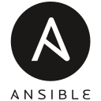

MY WORK
Tools and Technology I build with:



qualifications that support my experience in specific areas of information technology.
CPSAT Foundation
Certified Professional Selenium Automation Testing (July 2023 2015 - July 2028)
AWS
AWS Cloud Practitioner Essentials
DevOps Engineer and Automation Specialist with 3+ years of experience in designing scalable cloud infrastructure, CI/CD pipelines, and robust test automation frameworks. Proficient in Docker containerization, AWS (EC2, S3, CloudWatch), and Linux administration, with hands-on expertise in managing network infrastructure (NLB, DNS, DHCP, Cisco/Dell switches) and monitoring systems (Splunk, Nagios).
Carbondale, IL, 62901
Phone: +16184342182
Email: kodalichandrakoushik@gmail.com
linkedin: www.linkedin.com/in/chandrakoushikkodali
Summary of Qualifications:
DevOps Engineer and Automation Specialist with 3+ years of experience in designing scalable cloud infrastructure, CI/CD pipelines, and robust test automation frameworks. Proficient in Docker containerization, AWS (EC2, S3, CloudWatch), and Linux administration, with hands-on expertise in managing network infrastructure (NLB, DNS, DHCP, Cisco/Dell switches) and monitoring systems (Splunk, Nagios). As a CPSAT-Certified QA Engineer, developed automation frameworks using Selenium WebDriver/Grid, reducing regression testing efforts by 40% and slashing production error rates by 30% for enterprise applications. Skilled in driving observability through log analysis and network discovery (NetDisco), ensuring 99.9% uptime for critical systems. Spearheaded end-to-end CI/CD automation with GitHub Actions, accelerating release cycles by 25% while maintaining compliance and seamless integration with Jira/Zephyr Scale.
Technical Skills:
Soft Skills:
Experience:
Southern Illinois University Carbondale
Jan 2024 to Dec 2025
Graduate Research Assistant (Network Engineer)
Automated DHCP/DNS configurations using Ansible, reducing manual workload by 50% and improving reliability for 200+ campus devices. Achieved 99.9% network uptime by monitoring 50+ Cisco/Dell switches via Nagios and resolving vulnerabilities through Splunk-driven log analysis. Streamlined connectivity for 10,000+ users by deploying and managing cloud/controller-based Access Points and Extreme switches. Reduced troubleshooting time by 25% via Splunk alerting systems for critical network outages.
Deloitte
Aug 2022 to Dec 2023
Analyst
Significantly reduced regression testing time using Selenium/TestNG frameworks for Oracle Cloud apps. Accelerated release cycles by designing CI/CD pipelines (GitHub Actions) for automated testing and reporting. Enhanced cross-team collaboration by integrating automated test results with Jira/Zephyr Scale, boosting traceability. Enabled data-driven decisions by implementing Extent Reports, improving root-cause analysis time.
Wipro
Mar 2022 to Jul 2022
Trainee
Received training in using technologies such as React JS and Spring Boot to develop end-to-end applications.
Education:
Master's in Computer Science
Southern Illinois University, Carbondale Illinois 62901
Expected Graduation: Dec 2025
Bachelor's in Electronics and Communications Engineering
NRI Institute of Technology, India
Graduated: 2022
Tools and Technology I build with:
As a DevOps Engineer, I design scalable cloud infrastructure and automation pipelines that ensure stable and secure system operations, minimizing downtime and enhancing productivity.
My expertise in CI/CD and test automation frameworks allows me to streamline development processes, increasing efficiency and reducing operational costs.
With strong technical and soft skills, I excel in cross-team collaboration, clear communication, and effective problem solving, ensuring successful project completion and customer satisfaction.
Cloud & DevOps
Automation & Testing
Infrastructure & Networking
Chicago, Illinois USA
Github: https://github.com/chandrakodali
LinkedIn: https://www.linkedin.com/in/chandrakoushikkodali